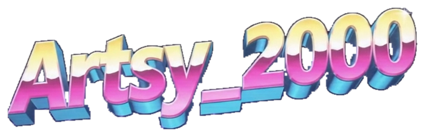
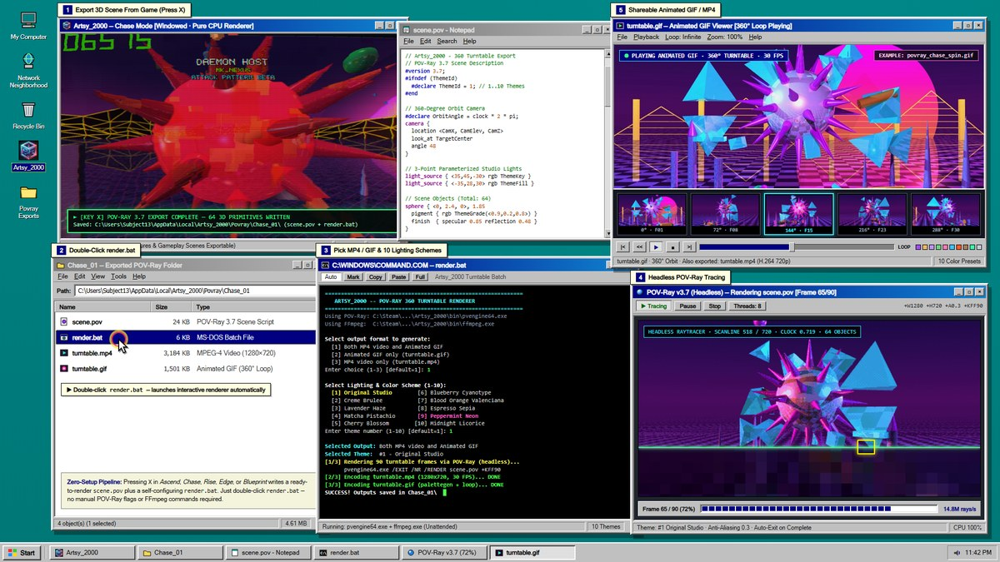
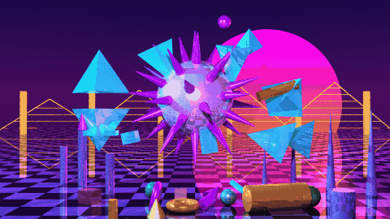
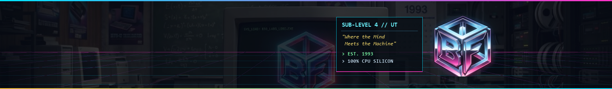
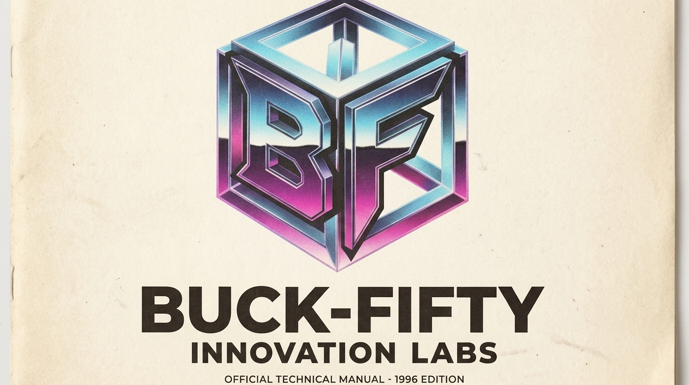
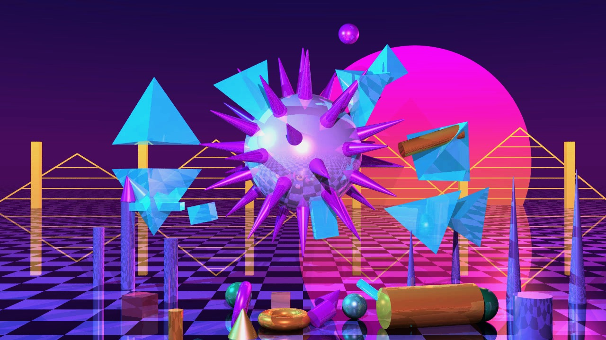
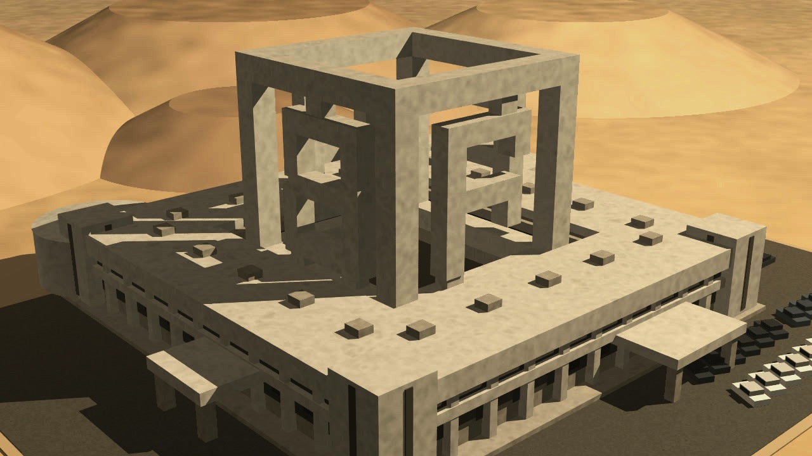
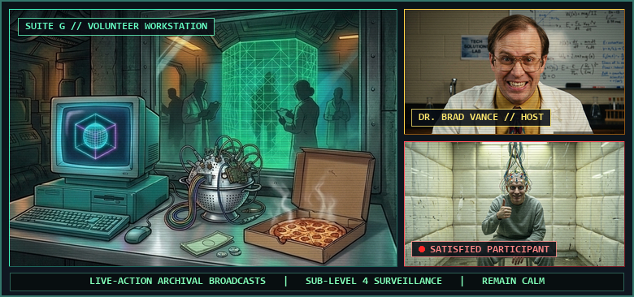
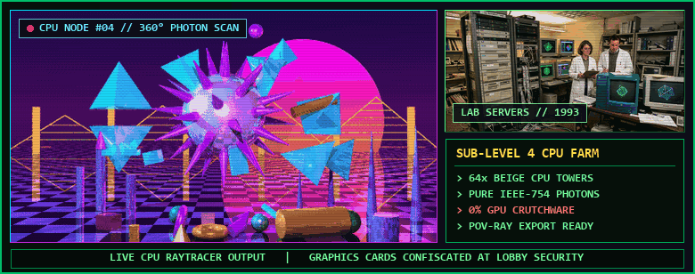

Chase Mode — Daemon Host Boss
Fibonacci Spike Sphere boss on pure CPU threads — exportable to POV-Ray 3.7.
1920×1200 · PNG
↓ PNG

A $1.50 multi-genre 1990s retro-futuristic arcade escape — and a surprisingly deep rabbit hole of Buck-Fifty Labs lore and cross-media secrets — built from scratch in pure C++17 CPU software rendering (zero GPU required), complete with one-click POV-Ray 3.7 export of both user-sculpted and live 3D scenes into multi-themed MP4 & GIF turntables.

Watermark-free PNG screenshots, transparent logos, key art banners, the 1920×1080 POV-Ray Win95 pipeline mockup, animated GIF renders, and plain-text fact sheets ready for immediate editorial use.
Everything in one archive: all 20 full-res 1920×1200 screenshots, 15 logos/key art/POV-Ray renders & Win95 pipeline mockup, plus Fact Sheet (.txt & .md).
Curated high-resolution 1920×1200 captures mixing pure-CPU 3D gameplay, Ascend 3D editor & POV-Ray export, CRT interrogations, GPS, racing, and FMV cutscenes.
Transparent wordmark, cube icon, key art banners, showcase collages, the 1920×1080 Win95 POV-Ray pipeline mockup, live spinning GIF, and studio renders.
Clean, copy-ready descriptions sized for news briefs, Steam roundups, and deep-dive features.
Artsy_2000 casts you as Subject 13 inside Buck-Fifty Innovation Labs' Sub-Level 4 — a satirical 1996 Salt Lake City cognitive research bunker promising volunteers a $1.50 per diem and one personal pan pizza voucher. Built from scratch in pure C++17 and Win32/GDI with zero GPU dependencies, the game shifts seamlessly across 11 narratively connected retro genres, 5 high-pressure CRT interrogations, and 74 archival FMV clips. Beneath its atmospheric arcade gauntlet lies an unusually deep well of secrets reaching far into the Buck-Fifty Labs universe — from unlockable archival TV spots to clues hidden across the companion 1996 website, Volunteer Manual, and graphic novels, including mysteries that can only be uncovered by pairing the game and website together. Players can also export both user-created 3D sculptures and live 3D gameplay scenes directly into POV-Ray 3.7 raytracing scripts and double-click a bundled script to render 360-degree MP4 videos or animated GIFs across 10 color and lighting schemes.
Set in 1996 inside the subterranean chambers of fictional Salt Lake City institute Buck-Fifty Innovation Labs, Artsy_2000 opens as a seemingly routine cognitive hardware evaluation hosted by unsettlingly cheerful Clinical Director Dr. Brad Vance. Once your test scores trigger an immediate “cranial harvest” directive, the orientation flips into an atmospheric, genre-hopping escape across Sub-Level 4's hardware terminals, surgical wards, conduit tunnels, and desert perimeter.
Rather than mimicking retro aesthetics on a modern game engine, Artsy_2000 is engineered from the ground up in pure C++17 and Win32/GDI software rendering — with zero DirectX, OpenGL, or Vulkan calls anywhere in the codebase. Every 3D Phong reflection, Mode-7 horizon, curved CRT glass distortion, emerald wireframe corridor, and stepped isometric raytraced arena runs natively on multi-threaded CPU silicon.
Beyond its narratively woven collection of 11 playable minigames and 5 timed CRT staff interrogations, Artsy_2000 is built as a deep well of secrets for players who refuse to take corporate signage at face value. Some discoveries lie just off the main escape path — unlockable archival TV spots, anomalous VHS transmissions, and tucked-away facility records — while deeper layers reach out across the wider Buck-Fifty universe: the companion 1996 corporate website (buckfiftylabs.com), the 46-page Volunteer Manual, and the graphic novels. Certain revelations can only be unlocked by investigating the game and website in combination, letting players pull the thread as far down Sub-Level 4 as their curiosity takes them.
Tinkerers and 1990s CGI enthusiasts can also step beyond the CRT altogether: pressing a single key exports both user-generated 3D creations sculpted in Ascend Mode (complete with Eric Haines' Standard Procedural Database generator) and live 3D gameplay scenes (Chase, The Rise, Edge Computing, Blueprint) straight into genuine POV-Ray 3.7 raytracing scripts paired with a zero-setup render.bat launcher. Double-clicking that script lets players choose MP4 video, animated GIF, or both — and pick from 10 embedded color and lighting schemes — before POV-Ray traces a smooth 360° turntable animation headlessly.
A $1.50 multi-genre 1990s retro-futuristic arcade escape — and a deep well of cross-media Buck-Fifty Labs secrets — built entirely in pure C++17 CPU software rendering (zero GPU), spanning 11 narratively connected genres, 74 FMV broadcasts, and one-click POV-Ray 3.7 export of both user-sculpted and live 3D scenes into multi-themed MP4 and animated GIF turntables.
scene.pov, then double-click render.bat to render 360° MP4/GIF loops in 10 lighting schemes.While modern PC releases demand multi-hundred-dollar GPUs and massive shader caches, Artsy_2000 computes every raytraced bounce, Mode-7 horizon, and CRT scanline purely on CPU threads via Win32/GDI.
Buck-Fifty Innovation Labs promises volunteers “$1.50 per diem and a personal pan pizza voucher.” The full Steam release matches the joke literally at $1.50 USD — packing 11 genres, 74 FMVs, and 153 achievements.
Honoring Salt Lake City's foundational computer-graphics heritage, players can export both custom 3D creations and live gameplay scenes into real POV-Ray scripts — then double-click one script to render 360° MP4s or animated GIFs in 10 lighting styles.
Behind the $1.50 arcade escape lies a layered mystery spanning unlockable archival TV spots, clues tucked inside the 1996 website (buckfiftylabs.com), the 46-page Volunteer Manual, and graphic novels — including secrets that only unlock when game and website are paired together.
Approved for embedding in articles, roundups, and video reaction coverage.
Companion documentary exploring the history and mathematics of CPU raytracing and POV-Ray behind Artsy_2000.
Historical featurette on Salt Lake City's pioneering 3D computer graphics heritage that inspired Buck-Fifty's setting.
All captures are native 1920×1200 PNGs blending pure-CPU 3D gameplay, Ascend 3D raytracer sculpting, CRT terminals, and live-action/animated FMV cutscenes. Click any shot to inspect full-size or download individually.
Download the 1920×1080 POV-Ray workflow mockup, live 360° GIF turntable, transparent logos (with dark/light/alpha preview below), and key art banners.
Press X in Ascend (user sculptures) or live 3D modes (Chase, Rise, Edge, Blueprint).
The game outputs a ready-to-run scene.pov plus render.bat — zero manual setup required.
Choose MP4, Animated GIF, or both, plus any of 10 studio color & lighting schemes.
POV-Ray 3.7 & FFmpeg trace 90 frames headlessly and output shareable MP4/GIF loops.











Artsy_2000 weaves 11 distinct gameplay genres, 5 timed CRT interrogations, and unlockable creative & archival secrets into a single escalating escape.
High-speed software-rendered ground pursuit across mirrored wireframe landscapes, chain enemies, and the Fibonacci Spike Sphere boss fight — exportable live to POV-Ray 3.7.
Monochrome green phosphor dual-snake showdown against rogue Sub-Level 4 AI Daemon 0x0666, also unlocked as Local 2-Player PvP.
14×14 stepped raytraced isometric grid with 5 elevations, R/G/B sentinel drones, tactical focus-time gadgets, and a 3-lane Panic Highway escape.
Classic 8-verb operating theater adventure with 64 surgical tools, narcotic arrow drift, EMP shocks, and a hidden typing breakout sequence.
Interactive CPU raytracer with Phong reflections, rigid-body geometric ammo charging, vertical monolith climbing, and live POV-Ray 3.7 export.
First-person emerald wireframe maze paired with an active ECG heart-rate monitor, scanline sprite catching, and visceral Guts decompression.
High-speed orbital navigation along an aluminum pipe network spanning all six faces of a folded 3D hypercube, complete with detached orbital camera and POV-Ray export.
Multi-resolution orbital satellite triangulation over public-domain USGS/USDA Utah imagery to pinpoint Site Alpha-4 before the satellite pass expires.
Architectural cyan schematic maze with graphite scanlines, rubberstamp pen catching, a 3D raytraced lobby tour, and instant POV-Ray export.
23-second stealth dash past patrolling scientists to the getaway car — warping into a medieval Dark Ages RPG hallucination when oxygen runs low.
OutRun-inspired 5-lane desert highway run featuring traffic dodges, roadside diners, brick-wall barriers, and a cosmic pepperoni skybox.
Out-bluff five distinct staff members — Prep Orderly, Dr. Sterling, Triage Officer, Pipe Tech, and the Bella Rosa Pizza Guy — before suspicion maxes out.
uint32_t* BGRA framebuffers) with zero DirectX, OpenGL, or Vulkan dependencies.resources.bin).X in Ascend, Chase, The Rise, Edge Computing, or Blueprint writes a 360° turntable scene.pov + interactive render.bat launcher supporting MP4/GIF output and 10 embedded lighting & color schemes via headless pvengine64.exe & ffmpeg.exe.Daniel M Sawitzki / Buck-Fifty Innovation Labs explicitly grants press outlets, reviewers, YouTubers, Twitch streamers, and independent creators permission to record, stream, publish, and monetize (via ad revenue, sponsorships, subscriptions, and tips) gameplay footage, reviews, critiques, tutorials, and articles featuring Artsy_2000 and all visual assets provided in this press kit.
Soundtrack Courtesy Note: The original soundtrack by Holon is licensed for embedded distribution inside Artsy_2000. Creators are welcome to keep in-game music enabled during gameplay coverage and livestreams; crediting Holon (holon-subatomic-audio.bandcamp.com) in descriptions is appreciated.